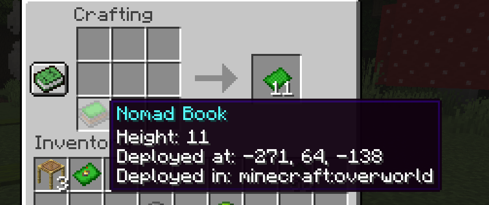

Nomad Books
Nomad Books
 Curseforge Page
Curseforge Page
Nomad Books is a Minecraft Fabric mod that introduces a solution for players that are always adventuring around their world. Nomad books and pages allow these players to store their camp under the form of an item and redeploy it whenever and wherever they wish.
Items
Grass Page
Blades of grass magically and carefully weaved into a delicate page. Crafting and upgrade material for nomad books and nomad pages.
Obtaining
Grass pages can be found in all dungeon, mineshaft, and jungle temple chests in stacks of 1.
Grass pages can also be obtained from nomad books and pages. When putting a deployed nomad book or page in a crafting inventory, said book or page can be dismantled into its corresponding number of pages.
Nomad Books (and Nomad Pages)
A nomad book is an item that can store a 7xNx7 sized camp, with N being its corresponding number of pages. When the camp is stored in the book, the cover of the book displays a campfire. When the camp is deployed, the cover does not display said campfire.
Obtaining
Nomad books can be obtained by combining lime dye, orange dye, gray dye, brown dye and grass pages. A newly crafted nomad book will contain 3 pages, therefore being able to store a 7x3x7 camp area.

Nomad books of 3 pages can also be found in all stronghold libraries chests in stacks of 1.
Usage
When a nomad book has a camp stored inside it, using it on a block with the book will deploy the camp.
To deploy the camp, the surface needs to be wide enough and the area needs to be free of non-replaceable
blocks (the camp will automatically destroy grass and snow when deployed).
When a nomad book does not store a camp (meaning the camp is deployed), using it will retrieve the camp.
However, camps cannot be retrieved across dimensions. Alternatively, using it while sneaking will reveal
the camp's boundaries (blocks highlighted being included).
Nomad Page
A nomad pages is the one page equivalent of a nomad book (therefore storing a camp area of 7x1x7). Nomad pages can be obtained by combining lime dye, orange dye, and grass pages.

Upgrading
Nomad books can be upgraded to a maximum amount of 12 pages by combining them with grass pages in a crafting inventory.

Dismantling
Nomad books and pages can be dismantled into grass pages. To do so, they need their camp to be deployed and be placed into a crafting inventory.
